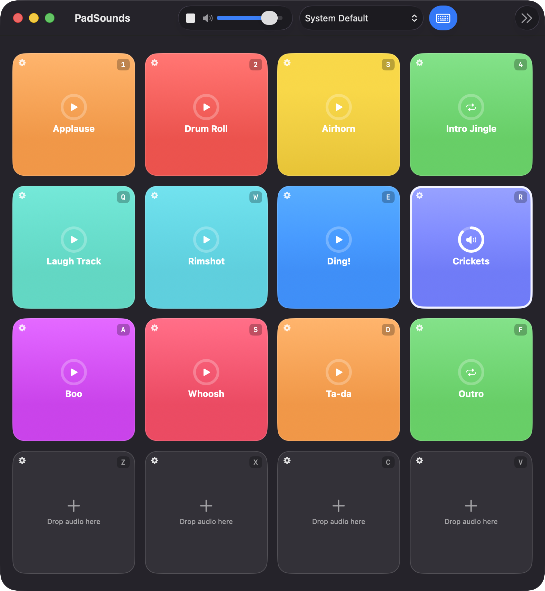
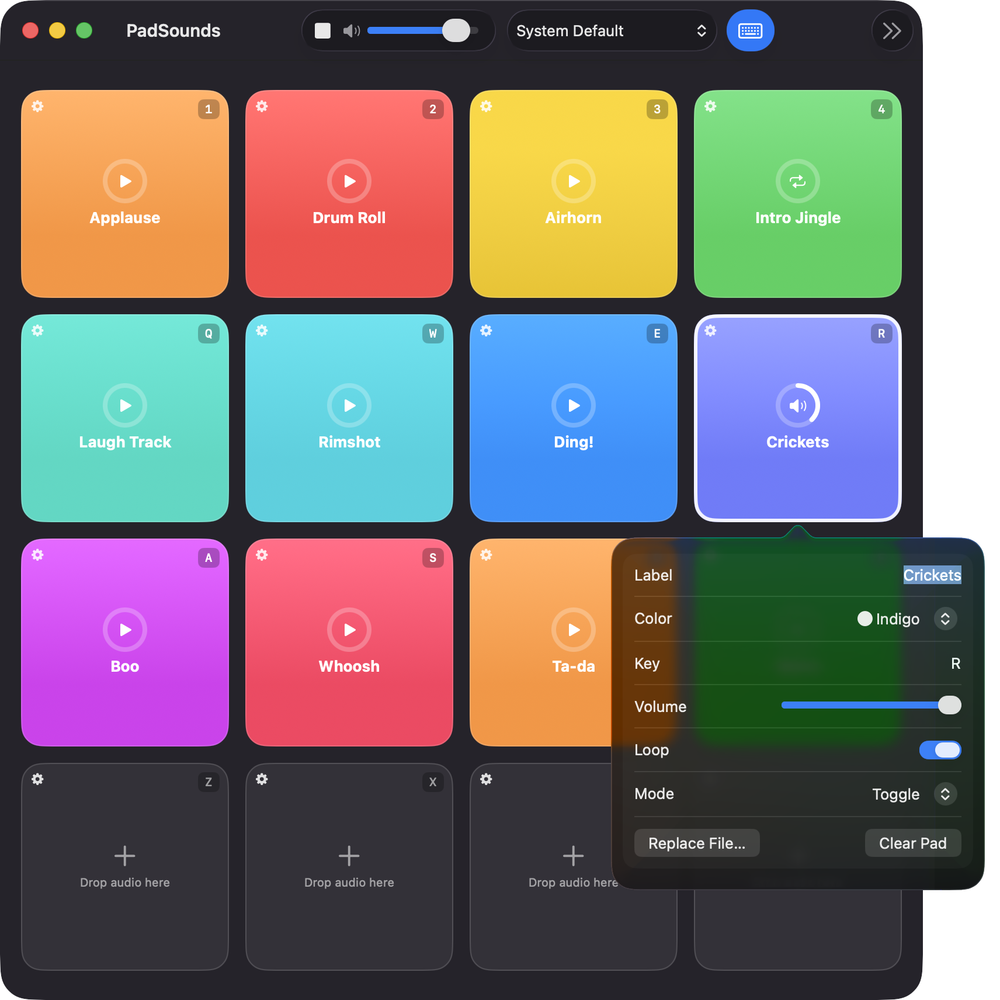
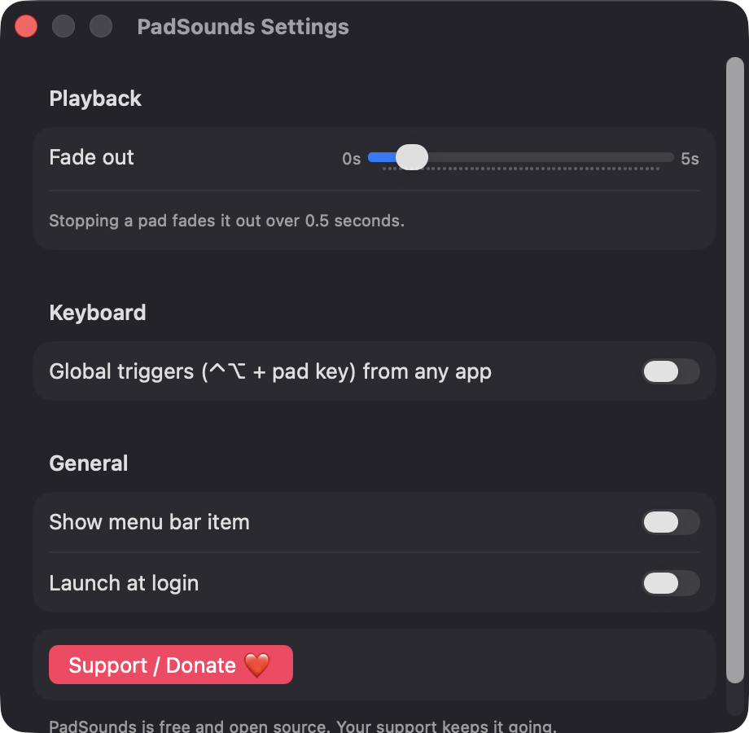

Trigger by click or key
Each of the 16 pads has its own key, with 1-4, Q-R, A-F and Z-V as defaults. Duplicate keys are rejected, and typing in a label field never fires a pad.
Open source · macOS 14+ · Universal binary · Audio
A 4×4 grid of sound pads for streams, podcasts and classes. Drop in audio files, then fire them with a click or a single key, even from another app with ⌃⌥ global triggers.
Free & MIT licensed · Apple Silicon & Intel · Latest release

Features
Everything you need to run a soundboard live, without accounts, servers or subscriptions.
Each of the 16 pads has its own key, with 1-4, Q-R, A-F and Z-V as defaults. Duplicate keys are rejected, and typing in a label field never fires a pad.
Set label, color, volume, loop and play mode for every pad. Choose Play Once, Hold to Play or Toggle.
Drop an audio file onto a pad to assign it. Files are copied into Application Support, so pads keep working if the original moves.
Set one master level and pick the output device for the whole board. If the device disappears, PadSounds falls back to the system default and tells you.
Press Esc or Stop All to silence the board, with a configurable fade-out from 0 to 5 seconds. A progress ring shows each pad as it plays.
Optionally fire pads with ⌃⌥ plus the pad's key while another app is in front. A menu bar item and launch at login are available in Settings.
Screenshots


Install
PadSounds is open source and not notarized with a paid Apple Developer ID, so macOS needs one extra step the first time.
xattr -cr /Applications/PadSounds.app
Download
Free, forever. Built for macOS 14 Sonoma or newer, Apple Silicon and Intel.
Not notarized: on first launch right-click PadSounds.app → Open.
FAQ
Yes. PadSounds is released under the MIT license and has no account, no server and no network access. If you find it useful, there is an optional Support button that links to Ko-fi.
None for normal use, since keys work whenever the PadSounds window is focused. Accessibility access is only needed if you turn on Global triggers, and the app only looks for its own pad keys. It never asks for Microphone or Screen Recording.
Your board is saved as JSON in ~/Library/Application Support/PadSounds/, next to copies of the audio files you imported. Nothing leaves your Mac.
Notarization requires a paid Apple Developer account, and PadSounds is a free open-source project. Right-click the app and choose Open once to get past Gatekeeper, or build it from source with Xcode.
Support ❤️
PadSounds is a free, open-source alternative to paid utilities. If it earns a spot on your Mac, a coffee keeps the updates coming.
☕ Support Or on Ko-fi